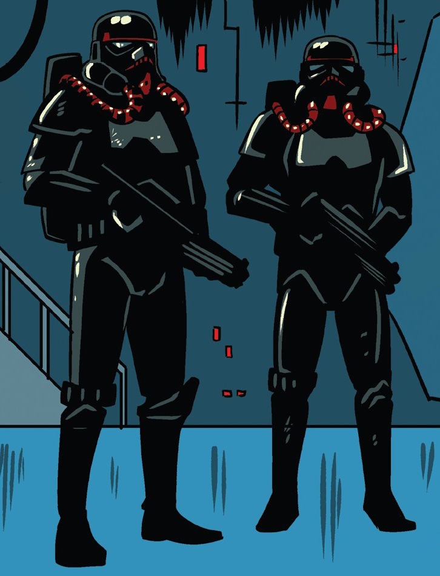
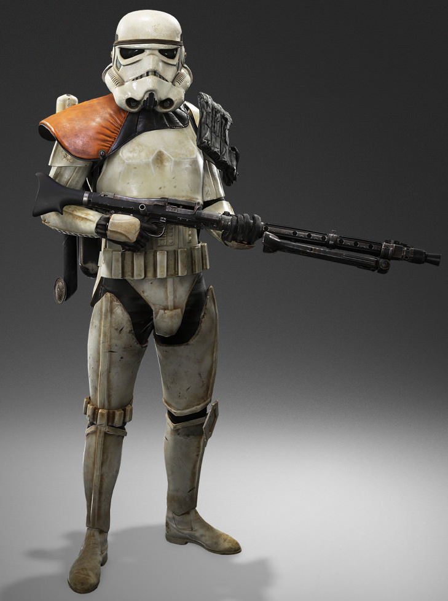
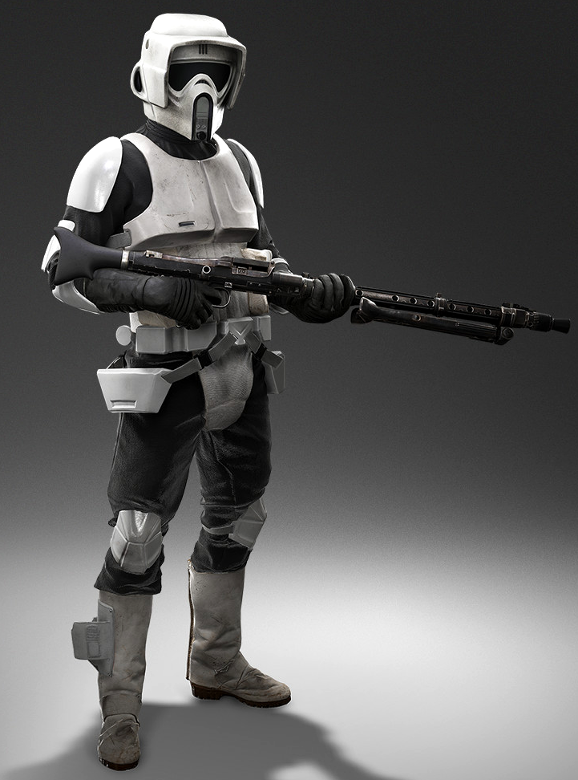
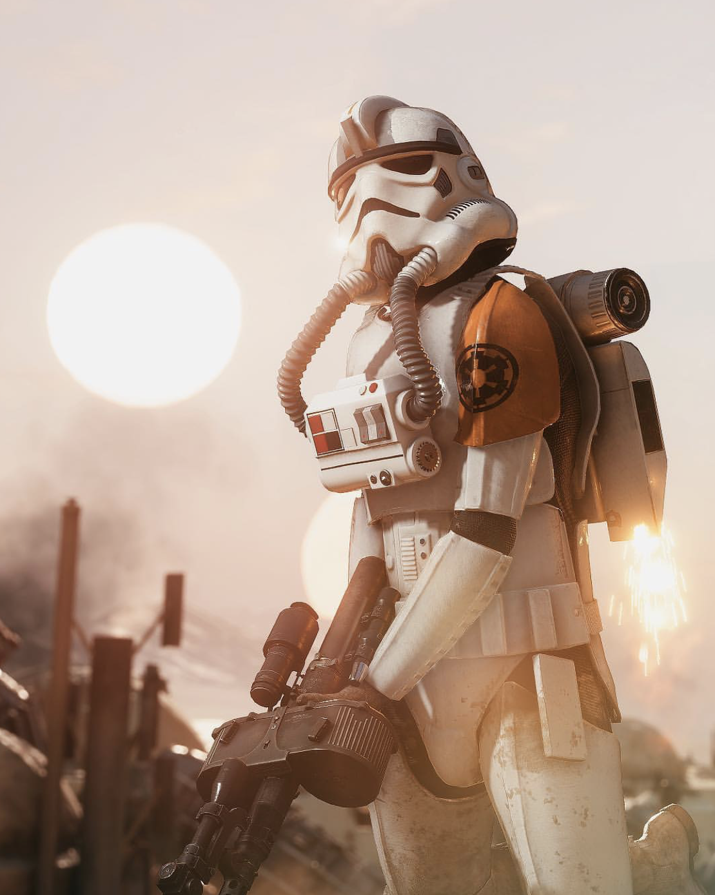
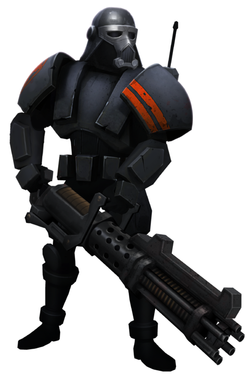
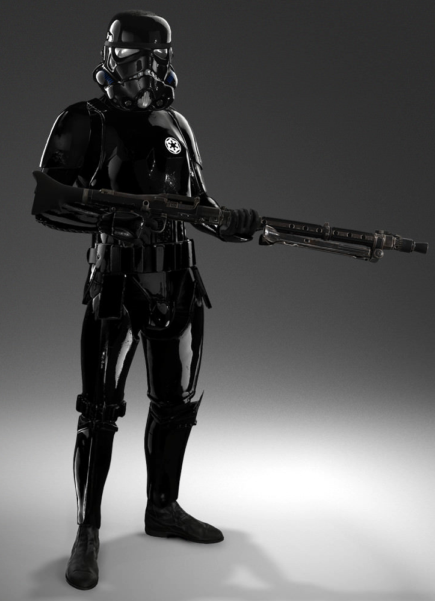

| Type | Weapon | Gear | Look | Battles | Affiliations |
|---|---|---|---|---|---|
| Lavatrooper | E-11 blaster rifle | Black armor with red lines and tubing for oxygen. Commanders were identified by the red line on their right shoulder pauldron. |
 |
Fortress Vader & Mustafar | Galactic Empire & Stormtrooper Corps |
| Sandtrooper | E-11 blaster rifle, the T-21 light repeating blaster, and the DLT-19 heavy blaster rifle. | cooling fans and a helmet sand filter. In addition, they wore a survival backpack stocked with extra rations and water. |
 |
Battle of Jakku. | Galactic Empire, Stormtrooper Corps & Jakku Imperial remnant |
| Deathtrooper | SE-14r light repeating blasters, E-11Ds, DLT-19D heavy blaster rifles, C-25 fragmentation grenades and Sonic Imploders. | They wore black suits of body-armor and specialized helmets with vocal scramblers, micro-motion sensors, and heads-up displays with data on enemy and friendly positions on the battlefield. |
|
Battle of Atollon | Galactic Empire & Imperial Intelligence |
| Cavetrooper | Carried blaster carbines, as well as oversized vibroknives. | They wore scout trooper armor. Cave troopers were also equipped with low-light vision gear to help them see in darkness and rappelling cables. |
 |
Battle of Endor & Battle of Jakku | Galactic Empire & Stormtrooper Corps |
| Jumptrooper | They could carry burst shields, an RT-97C heavy blaster rifle or an E-11 blaster rifle, and missile launchers. | they were equipped with a jetpack, or alternatively, with a jump pack that could suspend them in the air or maneuver through space environments. Generally suited with standard stormtrooper armor, but at times instead wore specialized armor, one of which included a mechanism attached to two tubes plugged into the helmet, similar to a TIE pilot's control box, and another variant with the tubes connecting the pack and the distinctively-different helmet. |
 |
Battle of Atollon & Battle of Jakku | Galactic Empire, Stormtrooper Corps & Jakku Imperial remnant |
| Purgetrooper | They carried a variety of weapons in their arsenal, such as flamethrowers, rocket launchers, heavy blasters, and sniper rifles. | Purge Troopers were equipped with heavy armor. Similar to that of the Phase II dark troopers, Imperial experimental units |
 |
Battle of Yavin & Battle of Hoth. | Galactic Empire, Stormtrooper Corps & Ubrik Adelhard's Imperial remnant |
| Shadowtrooper | Outfitted with a wide range of survival equipment,[3] the troopers wielded T-21 heavy blasters and flash grenades. | Shadow troopers were equipped with portable cloaking devices that rendered them almost completely invisible as they moved around. The shadow trooper helmets were equipped with a direct speaker placed between two induction filters on the chin section. The helmet's eye lenses and mouth area were gray in color. |
 |
Galactic Civil War | Galactic Empire |
| Wet-weather gear Stormtrooper | Armed with E-11 blaster rifles, and some were equipped with bandoliers. | They wore waterproof capes, which were necessary for wading through the swamplands of Mimban during the Mimban campaign. Compared to standard stormtrooper armor, theirs had additional space between plates at the shoulders, hips, and knees, allowing a greater range of movement. |
|
Mimban campaign | Galactic Empire & Stormtrooper Corps |